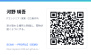

イベント用QRコードQR codes for the event
名刺・スライド・卓上ポスターの3用途、日本語版と英語版を用意しています。 誤り訂正レベルはH(30%)、余白は規格どおり4モジュール確保しているので、多少汚れても暗い会場でも読み取れます。 Business card, slide and table poster — in both Japanese and English. Error correction is level H (30%) with a full 4-module quiet zone, so it still scans when smudged or in a dim room.

↑ このURLが埋め込まれています。公開URLを変えたら下の手順で必ず作り直してください。 ↑ This is the URL encoded in the QR. If the site URL changes, regenerate it using the steps below.
{kind=link}

名刺の裏面や当日の名札に貼る想定。厚紙に等倍で印刷してください。 Meant for the back of a name card or your badge. Print at 100% scale on card stock.
{kind=link}
{kind=link}
{kind=link}
{kind=link}
-
assets/js/profile-config.jsのsiteUrlを新しい公開URLに書き換える UpdatesiteUrlinassets/js/profile-config.js - 下のコマンドを実行する（6ファイルが同時に更新されます） Run the command below (it rewrites all six files)
- 変更をコミットして push する Commit and push the result
pip install segno python3 tools/gen_qr.py python3 tools/gen_qr.py --url https://your-domain.example/
QRはURLだけを埋め込んでいます。サイトの中身をいくら更新してもQRは刷り直し不要です。 逆にURLが変わるとQRは無効になるので、独自ドメインを使う予定があるならドメインを決めてから印刷してください。 The QR encodes only the URL, so you can keep editing the site without reprinting. Changing the URL does invalidate it — decide on a custom domain before you print.